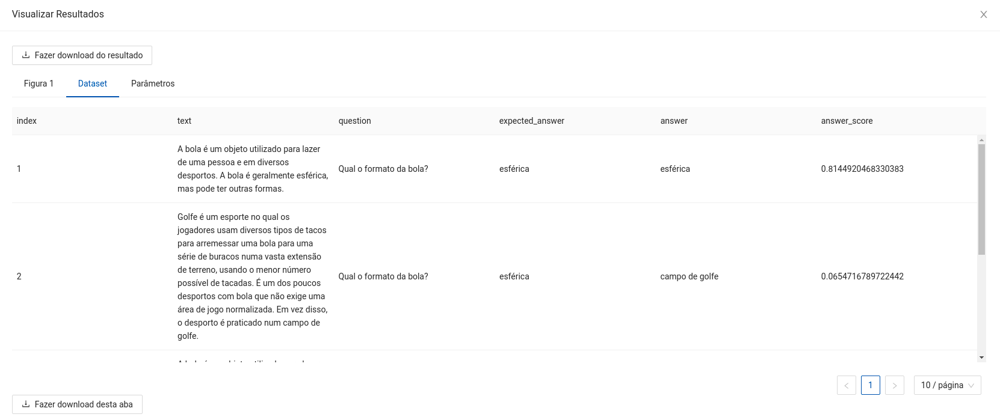

Este componente utiliza um modelo de QA (Pergunta e Resposta) pré-treinado em Português com o dataset SQuAD v1.1, é um modelo de domínio público disponível em Hugging Face. Seu objetivo é encontrar a resposta de uma ou mais perguntas de acordo com uma lista de contextos distintos.
Espera-se como entrada para o componente uma tabela com uma coluna de contextos para a aplicação do QA e uma coluna com as perguntas para serem aplicadas aos contextos.
A seguir são listados todos os parâmetros utilizados pelo componente:
string (Obrigatório).string (Obrigatório).string (Obrigatório).string (Obrigatório).string (Opcional).string, {"cuda", "cpu"}, padrão: "cuda" (Obrigatório)."cuda" e ela não estiver disponível na máquina, automaticamente será transferido para "cpu".string, {"sim", "não"}, padrão: "sim" (Obrigatório).As métricas de performance tem o propósito de ajudar o usuário a avaliar a performance do modelo. Essas métricas variam de acordo com o tipo de problema, tal como: classificação, regressão, agrupamento, entre outros.
O retorno durante a experimentação ajuda o usuário a analisar tanto métricas distintas de forma visual, como a distribuição dos dados e os dados brutos ao final da execução. Sendo assim, é possível visualizar diversos retornos para este componente como os listados a seguir:

Na implantação, espera-se uma requisição do tipo POST com os dados em formato JSON, com os campos ndarray e names seguindo a mesma estrutura dos dados utilizados na experimentação, em que ndarray refere-se aos valores, e names aos nomes das colunas de entrada. Um exemplo de uso seria:
$ curl --header "Content-Type: application/json" https://URL-DO-MODELO-IMPLANTADO -d "{"data":{"ndarray":[[1, "A bola é um objeto esférico utilizado para lazer e em diversos desportos.", "Qual é o formato da bola?"]], "names": ["index", "text", "question"]}}"
Espera-se como retorno um objeto JSON contendo os campos ndarray e names, referentes ao array de valores produzidos e ao nome das colunas após a aplicação. Um exemplo de saída seria:
{
"data":
{
"ndarray":[[1, "A bola é um objeto esférico utilizado para lazer e em diversos desportos.", "Qual é o formato da bola?", "esférico", 0.754]],
"names": ["index", "text", "question", "answer", "answer_score"]
}
}